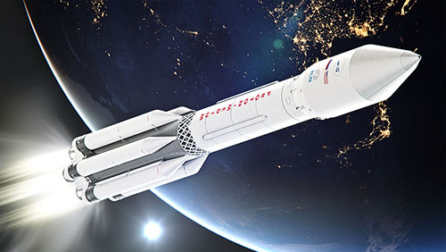

В 21 веке нас повсюду окружают технологии. Каждый день мы пользуемся телефонами интернетом системами спутниковой навигации и при этом совершенно не задумываемся о том, благодаря чему это всё работает. А ведь вся наша современная жизнь полностью зависит от Спутников, которые обыспечивают нас всеми благами современных технологий
Данный сайт создан для того, чтобы рассказать вам Космических аппаратах, благодаря которым мы можем пользоваться благами цивилизации, а наука продолжает развиваться со стремительной скоростью
Космический летательный аппарат (КЛА) - аппарат, предназначенный для полёта в космос или в космосе, например ракеты-носители (космические ракеты), искусственные спутники Земли (ИСЗ) и др. небесных тел. Наименование КЛА — общее, включает различные виды таких аппаратов, в том числе использующие и нереактивный принцип движения (например, солнечный парус и др.).  Ракеты-носители (космические ракеты) являются средством достижения необходимой скорости для осуществления космического полёта КЛА, которые можно разделить на 2 основные группы: а) околоземные орбитальные КЛА, движущиеся по геоцентрическим орбитам, не выходя за пределы сферы действия Земли (ИСЗ);б) межпланетные КЛА, которые в полёте выходят за пределы сферы действия Земли и входят в сферу действия Солнца, планет или их естественных спутников. При этом различают автоматические КЛА (автоматические ИСЗ, искусственные спутники Луны — ИСЛ, Марса — ИСМ, Солнца — ИСС и т. п., автоматические межпланетные станции — АМС) и пилотируемые (космические корабли-спутники, обитаемые орбитальные станции, межпланетные космические корабли). Большая часть указанных типов КЛА уже создана; ведётся разработка межпланетных кораблей для полёта и высадки на др. планеты, транспортных космических кораблей многократного использования и др.